Code
pacman::p_load(jsonlite,tidyverse,igraph,ggraph,RColorBrewer,sf,plotly) source: Dribble.com
source: Dribble.com
Vast Challenge also known as IEEE Visual Analytics Science and Technology (VAST) Challenge is Visual Analytics competition which aims to promote innovation in the field of data transformation and interactive visualization. Vast Challenge 2024 is based on the theme of detecting bias, illegal fishing behavior and temporal patterns in fishing industry in Oceanus, an island nation.
This exercise will be based on Mini-Challenge 2: MC2 of Vast Challenge 2024. The objective of the exercise is to help FishEye, a non-profit organization to detect and prevent illegal fishing behaviour, by performing geographic and temporal visual analysis. This exercise will aim to answer the following questions from MC2 of Vast Challenge through visual analytics:
Question 1:
Develop visualizations that illustrate the inappropriate behavior of SouthSeafood Express Corp vessels. FishEye analysts have long wanted to better understand the flow of commercially caught fish through Oceanus’s many ports. But as they were loading data into CatchNet, they discovered they had purchased the wrong port records. They wanted to get the ship off-load records, but they instead got the port-exit records (essentially trucks/trains leaving the port area). Port exit records do not include which vessel that delivered the products. Given this limitation, develop a visualization system to associate vessels with their probable cargos. Which vessels deliver which products and when? What are the seasonal trends and anomalies in the port exit records?.
Question 2:
Develop visualizations that illustrate the inappropriate behavior of SouthSeafood Express Corp vessels. How do their movement and catch contents compare to other fishing vessels? When and where did SouthSeafood Express Corp vessels perform their illegal fishing? How many different types of suspicious behaviors are observed? Use visual evidence to justify your conclusions.
| Package | Description |
|---|---|
| jsonlite | Fast JSON parser and generator, optimized for statistical data and the web. Offers simple, flexible tools for working with JSON in R. |
| tidyverse | Used for data import, tidying, manipulation, and data visualization. Packages like readr, dplyr, lubridate are part of tidyverse. |
| igraph | Used for network analysis. |
| ggraph | Extension of ggplot2 intended for using with networks, graphs and trees. |
| RColorBrewer | Color schemes for plots. |
| sf | Used for encoding spatial vector data. |
| plotly | Used for interactive, publication quality charts. |
The code chunk below uses p_load() function from pacman package to check if packages listed are already installed in the computer. The packages are loaded if they are found to be installed. If they are not installed, the function will proceed to install and load them into R environment.
pacman::p_load(jsonlite,tidyverse,igraph,ggraph,RColorBrewer,sf,plotly)Below code import MC2 data using fromJSON() command from jsonlite package.
mc2_data <- fromJSON("data/MC2/mc2.json")Below code process and clean Edges data.
# Load edges data to mc2_edges
mc2_edges <- as_tibble(mc2_data$links) %>%
distinct()
# Correcting date data type using lubridate package
mc2_edges$time <- as_datetime(mc2_edges$time)
mc2_edges$"_last_edited_date" <- as_datetime(mc2_edges$"_last_edited_date")
mc2_edges$"_date_added" <- as_datetime(mc2_edges$"_date_added")
mc2_edges$date <- as.POSIXct(mc2_edges$date, format = "%Y-%m-%d")
# Updating field names
mc2_edges <- mc2_edges %>%
rename("last_edited_by" = "_last_edited_by",
"date_added" = "_date_added",
"last_edited_date" = "_last_edited_date",
"raw_source" = "_raw_source",
"algorithm" = "_algorithm")
# Divide different events into different table
E_TransponderPing <- subset(mc2_edges, mc2_edges$type == "Event.TransportEvent.TransponderPing")
E_HarborRpt <- subset(mc2_edges, mc2_edges$type == "Event.HarborReport")
E_Tx <- subset(mc2_edges, mc2_edges$type == "Event.Transaction")
# save mc2_edges into R rds file format
write_rds(mc2_edges, "data/rds/mc2_edges.rds")Take a look at mc2_edges to ensure data is processed correctly.
glimpse(mc2_edges)Rows: 271,643
Columns: 17
$ type <chr> "Event.TransportEvent.TransponderPing", "Event.Tra…
$ time <dttm> 2035-09-16 04:06:48, 2035-09-20 05:21:33, 2035-09…
$ dwell <dbl> 115074.79, 412706.32, 286092.88, 327623.95, 243225…
$ last_edited_by <chr> "Olokun Daramola", "Melinda Manning", "Olokun Dara…
$ date_added <dttm> 2035-09-16 00:59:46, 2035-09-22 02:37:37, 2035-09…
$ last_edited_date <dttm> 2035-09-16 00:59:46, 2035-09-22 02:37:37, 2035-10…
$ raw_source <chr> "Oceanus Vessel Locator System", "Oceanus Vessel L…
$ algorithm <chr> "OVLS-Catch&Hook", "OVLS-Catch&Hook", "OVLS-Catch&…
$ source <chr> "City of Haacklee", "City of Haacklee", "City of H…
$ target <chr> "perchplundererbc0", "perchplundererbc0", "perchpl…
$ key <int> 0, 1, 2, 3, 4, 5, 6, 7, 8, 0, 1, 2, 3, 4, 5, 6, 7,…
$ date <dttm> NA, NA, NA, NA, NA, NA, NA, NA, NA, NA, NA, NA, N…
$ data_author <chr> NA, NA, NA, NA, NA, NA, NA, NA, NA, NA, NA, NA, NA…
$ aphorism <chr> NA, NA, NA, NA, NA, NA, NA, NA, NA, NA, NA, NA, NA…
$ holiday_greeting <chr> NA, NA, NA, NA, NA, NA, NA, NA, NA, NA, NA, NA, NA…
$ wisdom <chr> NA, NA, NA, NA, NA, NA, NA, NA, NA, NA, NA, NA, NA…
$ `saying of the sea` <chr> NA, NA, NA, NA, NA, NA, NA, NA, NA, NA, NA, NA, NA…Below code process and clean Nodes data.
# Load nodes data to mc2_nodes
mc2_nodes <- as_tibble(mc2_data$nodes) %>%
distinct()
# Correcting date data type using lubridate package
mc2_nodes$"_last_edited_date" <- as_datetime(mc2_nodes$"_last_edited_date")
mc2_nodes$"_date_added" <- as_datetime(mc2_nodes$"_date_added")
mc2_nodes$date <- as.POSIXct(mc2_nodes$date, format = "%Y-%m-%d")
# Updating field names
mc2_nodes <- mc2_nodes %>%
rename("last_edited_by" = "_last_edited_by",
"date_added" = "_date_added",
"last_edited_date" = "_last_edited_date",
"raw_source" = "_raw_source",
"algorithm" = "_algorithm")
# Tidy column contents
mc2_nodes <- mc2_nodes %>%
mutate(Activities = gsub("c[(]", "", Activities)) %>%
mutate(Activities = gsub("\"", "", Activities)) %>%
mutate(Activities = gsub("[)]", "", Activities))
mc2_nodes <- mc2_nodes %>%
mutate(fish_species_present = gsub("c[(]", "", fish_species_present)) %>%
mutate(fish_species_present = gsub("\"", "", fish_species_present)) %>%
mutate(fish_species_present = gsub("[)]", "", fish_species_present))
# Divide different nodes into different dataset
N_fish <- subset(mc2_nodes, mc2_nodes$type == "Entity.Commodity.Fish") %>%
select_if(~ !any(is.na(.))) %>%
select(-c(`type`, `raw_source`, `algorithm`, `Activities`, `fish_species_present`)) %>%
rename(fish_species = name,
fish_id = id)
NL_City <- subset(mc2_nodes, mc2_nodes$type == "Entity.Location.City") %>%
select_if(~ !any(is.na(.))) %>%
select(-c(`raw_source`, `algorithm`, `type`, `fish_species_present`)) %>%
rename(city_name = Name,
city_id = id)
NL_Point <- subset(mc2_nodes, mc2_nodes$type == "Entity.Location.Point") %>%
select_if(~ !any(is.na(.))) %>%
select(-c(`raw_source`, `algorithm`, `kind`, `fish_species_present`)) %>%
rename(point_name = Name,
point_id = id)
NL_Region <- subset(mc2_nodes, mc2_nodes$type == "Entity.Location.Region") %>%
select_if(~ !any(is.na(.))) %>%
select(-c(`raw_source`, `algorithm`, `type`, `Description`)) %>%
rename(region_name = Name,
region_id = id,
region_kind = kind)
N_Delivery_doc <- subset(mc2_nodes, mc2_nodes$type == "Entity.Document.DeliveryReport") %>%
select_if(~ !any(is.na(.))) %>%
rename(deliver_date = date,
cargo_id = id) %>%
select(-c(`algorithm`, `type`, `raw_source`, `Activities`, `fish_species_present`))
N_vessel <- mc2_nodes %>%
filter(grepl("Entity.Vessel", type)) %>%
mutate(vessel_type = case_when(
grepl("FishingVessel", type, ignore.case = TRUE) ~ "Fishing",
grepl("Ferry.Passenger", type, ignore.case = TRUE) ~ "Ferry_Passenger",
grepl("Ferry.Cargo", type, ignore.case = TRUE) ~ "Ferry_Cargo",
grepl("Research", type, ignore.case = TRUE) ~ "Research",
grepl("Other", type, ignore.case = TRUE) ~ "Other",
grepl("Tour", type, ignore.case = TRUE) ~ "Tour",
grepl("CargoVessel", type, ignore.case = TRUE) ~ "Cargo_Vessel"
)) %>%
select(-c(`algorithm`, `type`, `raw_source`, `Activities`, `fish_species_present`)) %>%
mutate(company = ifelse(is.na(company), "Unknown", company)) %>% # Handle NA values by replacing NA with unknown
rename(vessel_id = id,
vessel_name = Name,
vessel_company = company) %>%
select_if(~ !any(is.na(.)))
# save mc2_nodes into R rds file format
write_rds(mc2_nodes, "data/rds/mc2_nodes.rds")Take a look at mc2_nodes to ensure data is processed correctly.
glimpse(mc2_nodes)Rows: 5,637
Columns: 20
$ type <chr> "Entity.Commodity.Fish", "Entity.Commodity.Fish",…
$ last_edited_by <chr> "Clepper Jessen", "Clepper Jessen", "Haenyeo Hyun…
$ date_added <dttm> 2033-09-04, 2034-01-21, 2033-06-22, 2033-11-24, …
$ last_edited_date <dttm> 2035-01-25, 2035-01-04, 2035-01-14, 2035-01-14, …
$ raw_source <chr> "", "", "", "", "", "", "", "", "", "", "Oceanus:…
$ algorithm <chr> "", "", "", "", "", "", "", "", "", "", "", "", "…
$ name <chr> "Cod/Gadus n.specificatae", "Birdseye/Pisces frig…
$ id <chr> "gadusnspecificatae4ba", "piscesfrigus900", "pisc…
$ Name <chr> NA, NA, NA, NA, NA, NA, NA, NA, NA, NA, "Haacklee…
$ Description <chr> NA, NA, NA, NA, NA, NA, NA, NA, NA, NA, NA, NA, N…
$ Activities <chr> "NULL", "NULL", "NULL", "NULL", "NULL", "NULL", "…
$ kind <chr> NA, NA, NA, NA, NA, NA, NA, NA, NA, NA, "city", "…
$ qty_tons <dbl> NA, NA, NA, NA, NA, NA, NA, NA, NA, NA, NA, NA, N…
$ date <dttm> NA, NA, NA, NA, NA, NA, NA, NA, NA, NA, NA, NA, …
$ flag_country <chr> NA, NA, NA, NA, NA, NA, NA, NA, NA, NA, NA, NA, N…
$ company <chr> NA, NA, NA, NA, NA, NA, NA, NA, NA, NA, NA, NA, N…
$ tonnage <int> NA, NA, NA, NA, NA, NA, NA, NA, NA, NA, NA, NA, N…
$ length_overall <int> NA, NA, NA, NA, NA, NA, NA, NA, NA, NA, NA, NA, N…
$ style <chr> NA, NA, NA, NA, NA, NA, NA, NA, NA, NA, NA, NA, N…
$ fish_species_present <chr> "NULL", "NULL", "NULL", "NULL", "NULL", "NULL", "…Below code vessel type and company to transponder ping data and filter by fishing vessels only.
# Rename target column as vessel_id
E_TransponderPing <- E_TransponderPing %>%
rename(vessel_id = target)
# Join data tables to include vessel_type, vessel_company in transponder ping data and filter only Fishing vessel type
E_Tping_Fishing <- E_TransponderPing %>%
left_join(N_vessel %>% select(vessel_id, vessel_type, vessel_company), by = "vessel_id") %>%
filter(vessel_type == "Fishing")Code chunk below uses st_read() of sf package to import Oceanus Geography and Oceanus Locations geographical file in geojson format into R.
# Import into R
OceanusGeography = st_read("data/MC2/OceanusGeography.geojson") %>%
st_transform(crs = 4326)Reading layer `OceanusGeography' from data source
`C:\tmyatnoe\ISSS608-VAA\Take-home_Ex\Take-home_Ex03\data\MC2\OceanusGeography.geojson'
using driver `GeoJSON'
Simple feature collection with 29 features and 7 fields
Geometry type: GEOMETRY
Dimension: XY
Bounding box: xmin: -167.0654 ymin: 38.07452 xmax: -163.2723 ymax: 40.67775
Geodetic CRS: WGS 84# Save OceanusGeography into rds format for future use
write_rds(OceanusGeography, "data/rds/OceanusGeography.rds")
# Import into R
OceanusLocations <- st_read(dsn = "data/shp",
layer = "Oceanus Geography")Reading layer `Oceanus Geography' from data source
`C:\tmyatnoe\ISSS608-VAA\Take-home_Ex\Take-home_Ex03\data\shp'
using driver `ESRI Shapefile'
Simple feature collection with 27 features and 7 fields
Geometry type: POINT
Dimension: XY
Bounding box: xmin: -167.0654 ymin: 38.07452 xmax: -163.2723 ymax: 40.67775
Geodetic CRS: WGS 84# Save OceanusLocations into rds format for future use
write_rds(OceanusLocations, "data/rds/OceanusLocations.rds")First, we need to associate Cargo in delivery doc to fish species and port city info using Transaction, city and Fish Nodes data.
# Extract Cargo to Fish relation data from Transaction Event data
Cargo_to_Fish <- E_Tx %>%
filter(target %in% N_fish$fish_id) %>% select(source, target)
# Match Cargo Id in delivery doc to fish Id from Transaction data
N_Delivery_doc <- N_Delivery_doc %>%
left_join(Cargo_to_Fish, by = c("cargo_id" = "source"))
# Match Fish Id in delivery doc to fish species from Fish Nodes
N_Delivery_doc <- N_Delivery_doc %>%
left_join(N_fish %>% select("fish_id", "fish_species"), by = c("target" = "fish_id"))
# Rename Target Column in N_Delivery_doc to Fish Id
N_Delivery_doc <- N_Delivery_doc %>%
rename(fish_id = target)
# Extract Cargo to Port relation data from Transaction Event data
Cargo_to_City <- E_Tx %>%
filter(target %in% NL_City$city_id) %>% select(source, target)
# Match Cargo Id in delivery doc to fish Id from Transaction data
N_Delivery_doc <- N_Delivery_doc %>%
left_join(Cargo_to_City, by = c("cargo_id" = "source"))
# Rename Target Column in N_Delivery_doc to Port
N_Delivery_doc <- N_Delivery_doc %>%
rename(port = target)Next, extract date only from time column of transponder data.
# Extract Date only from time column of Transponder Ping data
E_Tping_Fishing <- E_Tping_Fishing %>%
mutate(date_only = as.Date(time))Connect possible cargo (from delivery doc) to vessels (transponder ping data) using date as connection. This will give probable cargo delivered by each vessel.
# Merge the datasets based on the date
Tping_to_Delivery <- E_Tping_Fishing %>%
filter(source %in% NL_City$city_id) %>%
left_join(N_Delivery_doc %>% select("deliver_date","port","cargo_id", "qty_tons", "fish_id", "fish_species"), by = c("date_only" = "deliver_date", "source" = "port"))Visualize which company possibly delivers which fish species.
# Remove duplicate rows based on vessel_company and fish_species
distinct_species <- Tping_to_Delivery %>%
distinct(vessel_company, fish_species) %>% na.omit() %>% select(vessel_company, fish_species)
# Filter to show only the first 50 companies alphabetically
companies1 <- distinct_species %>%
distinct(vessel_company) %>%
arrange(vessel_company) %>%
head(50) %>%
pull(vessel_company)
# Filter data to include only these first 50 companies alphabetically
companies1_data <- distinct_species %>%
filter(vessel_company %in% companies1)
# Creating stacked bar chart for first 50 companies alphabetically
p1 <- ggplot(companies1_data, aes(x = vessel_company, fill = fish_species)) +
geom_bar(position = "stack") +
labs(title = "Probable Fish Species Delivered by Company",
x = "Vessel Company",
y = "Fish Species") +
theme(axis.text.x = element_blank(),
axis.text.y = element_text(size = 8),
legend.text = element_text(size = 8),
legend.title = element_text(size = 8)) +
scale_fill_discrete(name = "Fish Species") +
scale_fill_brewer(palette = "Dark2") +
coord_flip() +
scale_fill_brewer(palette = "Paired")
# Get all company names excluding the first 50 alphabetically
companies2 <- distinct_species %>%
distinct(vessel_company) %>%
arrange(vessel_company) %>%
slice(51:n()) %>%
pull(vessel_company)
# Filter data to include only 51st to last company alphabetically
companies2_data <- distinct_species %>%
filter(vessel_company %in% companies2)
# Creating stacked bar chart for 51st to last company alphabetically
p2 <- ggplot(companies2_data, aes(x = vessel_company, fill = fish_species)) +
geom_bar(position = "stack") +
labs(title = "Probable Fish Species Delivered by Company",
x = "Vessel Company",
y = "Fish Species") +
theme(axis.text.x = element_blank(),
axis.text.y = element_text(size = 8),
legend.text = element_text(size = 8),
legend.title = element_text(size = 8)) +
scale_fill_discrete(name = "Fish Species") +
coord_flip() +
scale_fill_brewer(palette = "Paired")
p2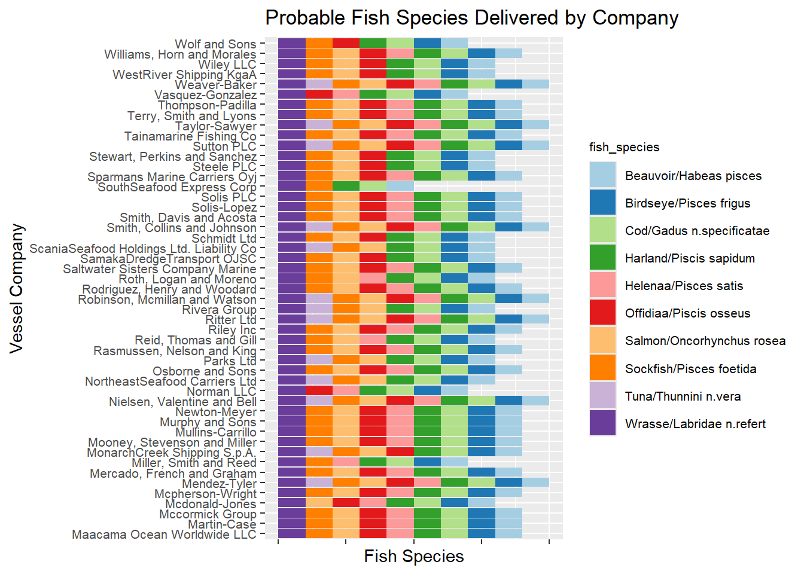
p1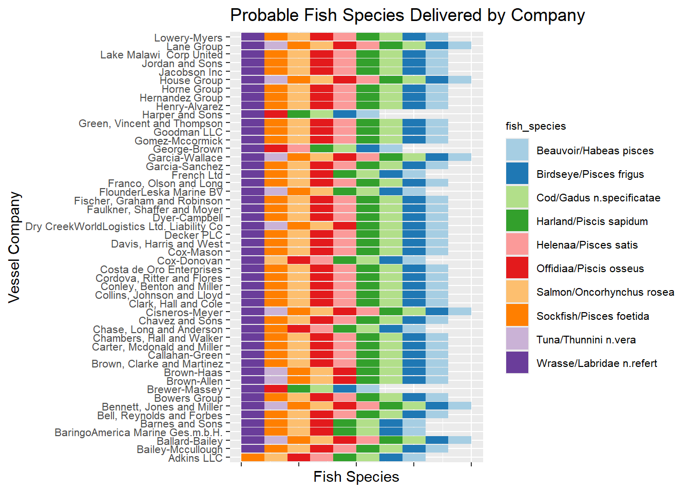
Observation: It is observed that SouthSeafood Express Corp’s catch content has fewer types of fish species comparing to majority of the companies which catch at least 8 species. SouthSeafood Express Corp’s catch content shows 5 species of fish namely: Wrasse, Sockfish, Harland, Cod and Beauvoir. This observation calls for further deep dive in catch content and delivery document of SouthSeafood Express Corp since low catch content may indicate non-reporting/ misreporting the actual catch from fishing to officials or tanshipment which are a form of Illegal, unreported and unregulated (IUU) fishing.
# Convert deliver_date to a date format and extract year_month from deliver_date
N_Delivery_doc <- N_Delivery_doc %>%
mutate(year_month = floor_date(deliver_date, "month"))
# Group data by year_month
monthly_data <- N_Delivery_doc %>%
group_by(year_month) %>%
summarise(total_qty_tons = sum(qty_tons))
# Extract the month (Full month name format) from the 'date' column
monthly_data$month <- format(monthly_data$year_month, "%B")
# Plot the graph using plotly
plot_ly(data = monthly_data,
x = ~month,
y = ~total_qty_tons,
type = 'bar',
marker = list(color = '#800080')) %>%
layout(title = 'Total Quantity of Fish Delivered per Month',
xaxis = list(title = 'Month',
tickvals = monthly_data$month),
yaxis = list(title = 'Total Quantity (tons)')) It is observed that total catch quantity shows increasing trend from beginning of the year to end of the year. Next, above chart will be further broken down by fish species to check any seasonality in fish species caught.
# Group data by year_month & fish_species and sum up total_qty_tons
group_by_fish_species <- N_Delivery_doc %>%
group_by(year_month, fish_species) %>%
summarise(total_qty_tons = sum(qty_tons), .groups = 'drop')
# Remove scientific name in fish species
group_by_fish_species <- group_by_fish_species %>%
mutate(fish_species = sub("/.*", "", fish_species))
# Update year_month to Date format
group_by_fish_species <- group_by_fish_species %>%
mutate(year_month = as.Date(year_month))
# Plot the graph using ggplot
p <- ggplot(group_by_fish_species, aes(x = year_month, y = total_qty_tons, fill = fish_species)) +
geom_bar(stat = "identity") +
labs(title = "Total Quantity of Fish Delivered per Month (Breakdown by Fish Species)",
x = "Month",
y = "Total Quantity (tons)",
fill = "Fish Species") +
theme(axis.text.x = element_text(angle = 90, hjust = 1)) +
scale_x_date(date_breaks = "1 month", date_labels = "%b %Y") +
scale_fill_brewer(palette = "Paired")
# Create interactive plot using ggplotly
ggplotly(p) Observation: From plots above, general increasing trend is observed in the total fish caught and delivered to port from February to November. There is significant increase in cod fish catches stating from August. This may be a sign of illegal fishing which is taking fish in excess quota or this could be attributed to starting of best time for cod fishing which is winter.
Observation: From plots above, general increasing trend is observed in the total fish caught and delivered to port from February to November. There is significant increase in cod fish catches stating from August. This may be a sign of illegal fishing which is taking fish in excess quota or this could be attributed to starting of best time for cod fishing which is winter.
Transponder ping data can provide the locations the vessels from shipping company has been to or in the vicinity and give insight whether vessels may be conducting illegal fishing activities in non-fishing areas. In this section, we will focus only on fishing vessels to understand fishing activities.
Zoom into SouthSeafood Express Corp’s vessel movement to uncover any suspicious behavior.
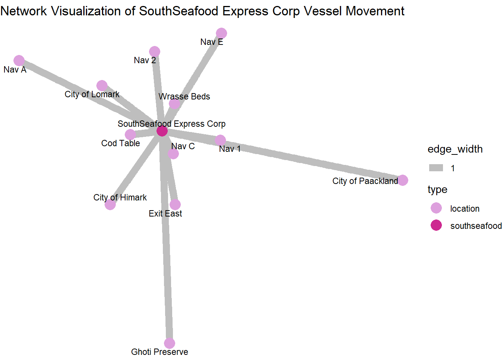
# Filter SouthSeafood Express Corp Vessels Only
E_Tping_Fishing_SS <- E_Tping_Fishing %>%
filter(vessel_company == "SouthSeafood Express Corp")
edges_ss <- data.frame(
from = E_Tping_Fishing_SS$vessel_company,
to = E_Tping_Fishing_SS$source
)
# Creating graph object
graph_ss <- graph_from_data_frame(edges_ss, directed = FALSE)
# Distinguish between SouthSeafood and location
V(graph_ss)$type <- ifelse(V(graph_ss)$name == "SouthSeafood Express Corp", "southseafood", "location")
# Plot the network with ggraph
ggraph(graph_ss, layout = 'fr') +
geom_edge_link(aes(width = 1), edge_colour = "grey") +
geom_node_point(aes(color = type), size = 5) +
geom_node_text(aes(label = name), repel = TRUE, size = 3, color = "black") +
scale_color_manual(values = c("location" = "plum", "southseafood" = "maroon3")) +
theme_void() +
labs(title = "Network Visualization of SouthSeafood Express Corp Vessel Movement") Observation: One anomaly noted here is that SouthSeafood Express Corp Vessels visited or has been in vicinity Ghoti Preserve which is not a fishing ground but ecological reserve. Length of each branch indicate frequency of transponder ping to each location, shorter being more frequent transponder pings.
Observation: One anomaly noted here is that SouthSeafood Express Corp Vessels visited or has been in vicinity Ghoti Preserve which is not a fishing ground but ecological reserve. Length of each branch indicate frequency of transponder ping to each location, shorter being more frequent transponder pings.
Creating vessel movement data table based in transponder ping and adding corresponding co-ordinates to data for further visualization.
# Create vessel movement data table
vessel_movement_data <- E_TransponderPing %>%
select(time, dwell, source, vessel_id)
# Tidy source column
vessel_movement_data <- vessel_movement_data%>%
mutate(source = gsub("^City of", "", source)) %>%
mutate(source = gsub("^\\s+", "", source))
# Add X, Y coordinates to vessel movement data table
coords <- st_coordinates(OceanusLocations)
OceanusLocations_df <- OceanusLocations %>%
st_drop_geometry()
OceanusLocations_df$XCOORD <- coords[, "X"]
OceanusLocations_df$YCOORD <- coords[, "Y"]
OceanusLocations_df <- OceanusLocations_df %>%
select(Name, X.Kind, XCOORD, YCOORD) %>%
rename(Loc_Type = X.Kind)
vessel_movement_data <- vessel_movement_data %>%
left_join(OceanusLocations_df,
by = c("source" = "Name"))
# save data as rds format
write_rds(vessel_movement_data, "data/rds/vessel_movement_data.rds")Below code is used to create Vessel Trajectory Data.
vessel_movement_sf <- vessel_movement_data %>%
st_as_sf(coords = c("XCOORD", "YCOORD"),
crs = 4326)
vessel_movement_sf <- vessel_movement_sf %>%
arrange(vessel_id, time)
vessel_trajectory <- vessel_movement_sf %>%
group_by(vessel_id) %>%
summarize(do_union = FALSE) %>%
st_cast("LINESTRING")Below visualization shows Geo-Temporal Patterns of the SouthSeafood Express Corp Vessels.
# Filter SouthSeafood Express Corp Vessel
vessel_trajectory_selected2 <- vessel_trajectory %>%
filter(vessel_id %in% c("roachrobberdb6", "snappersnatcher7be"))
# Plot the chart
ggplot() +
geom_sf(data = OceanusGeography) +
geom_sf(data = vessel_trajectory_selected2,
aes(color = factor(vessel_id)),
size = 1) +
geom_text(data = OceanusLocations_df,
aes(x = XCOORD, y = YCOORD, label = Name),
size = 3, hjust = 1, vjust = 1) +
theme_minimal() +
labs(title = "Trajectories of SouthSeafood Express Corp Vessels",
x = "Longitude", y = "Latitude", color = "ID")It can be observed from above visualizations that snappersnatcher7be of SouthSeafood Express Corp is the vessel which had transponder pings around Ghoti Preserve which is not meant for commercial fishing. Next, SouthSeafood Express Corp Vessels routes above will be compared with randomly chosen fishing vessel routes to uncover any anomaly in fishing route.
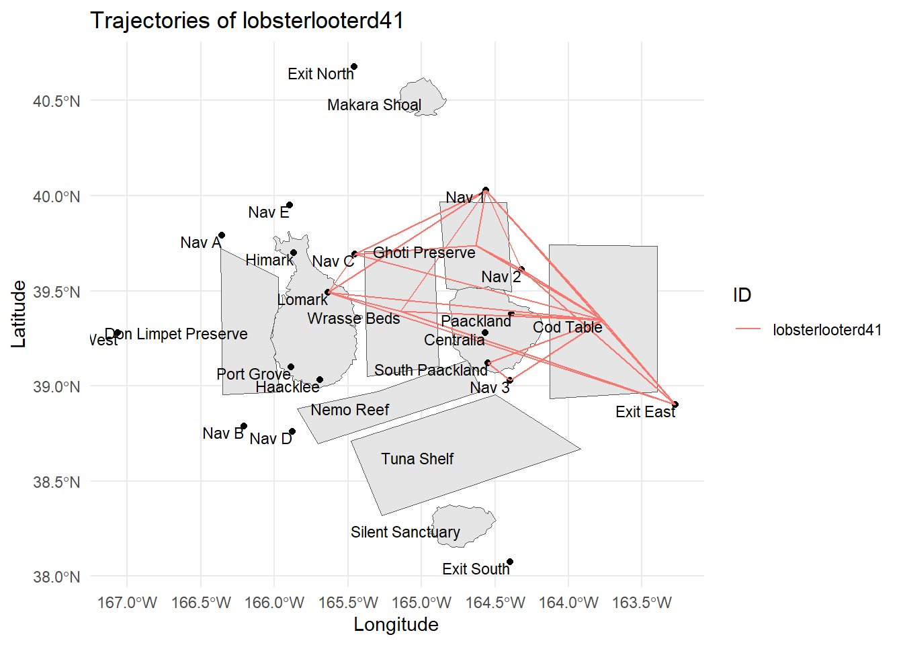
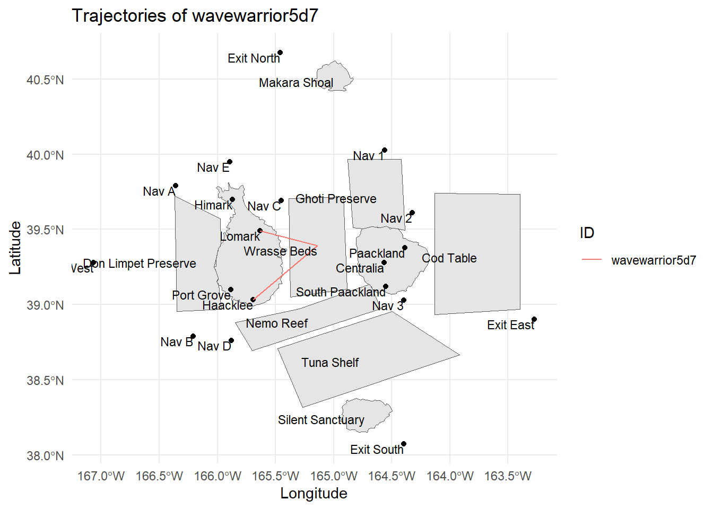
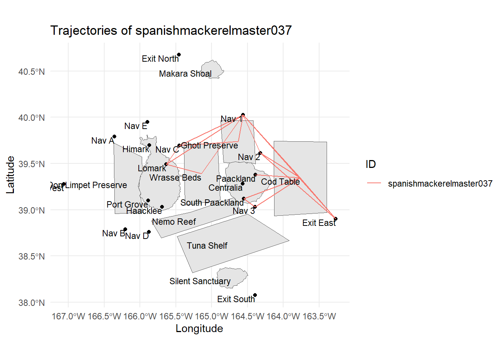
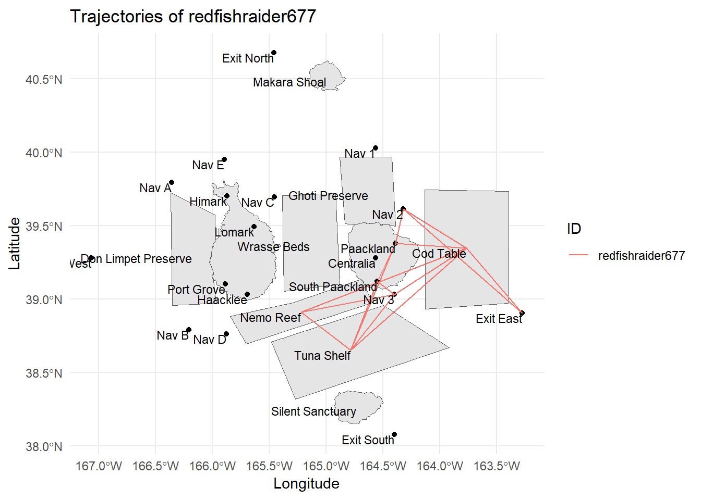
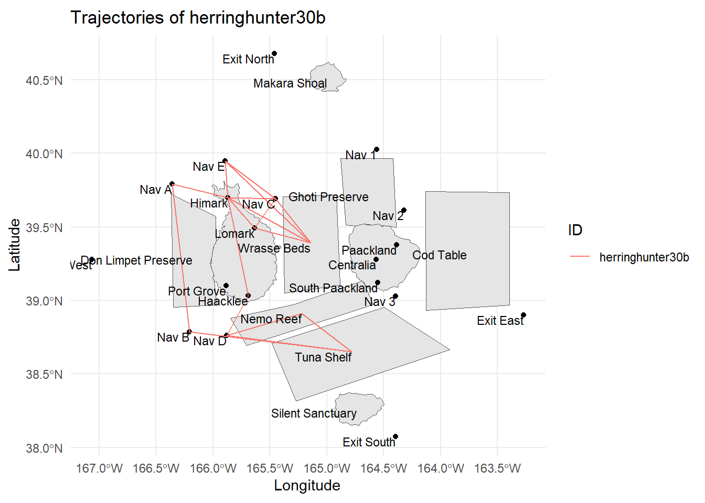
### lobsterlooterd41
# Filter Vessel data
vessel_trajectory_selected3 <- vessel_trajectory %>%
filter(vessel_id == "lobsterlooterd41") # Wolf and Sons
# Plot the chart
ggplot() +
geom_sf(data = OceanusGeography) +
geom_sf(data = vessel_trajectory_selected3,
aes(color = factor(vessel_id)),
size = 1) +
geom_text(data = OceanusLocations_df,
aes(x = XCOORD, y = YCOORD, label = Name),
size = 3, hjust = 1, vjust = 1) +
theme_minimal() +
labs(title = "Trajectories of lobsterlooterd41",
x = "Longitude", y = "Latitude", color = "ID")
### wavewarrior5d7
# Filter Vessel data
vessel_trajectory_selected4 <- vessel_trajectory %>%
filter(vessel_id == "wavewarrior5d7") # Rivera Group
# Plot the chart
ggplot() +
geom_sf(data = OceanusGeography) +
geom_sf(data = vessel_trajectory_selected4,
aes(color = factor(vessel_id)),
size = 1) +
geom_text(data = OceanusLocations_df,
aes(x = XCOORD, y = YCOORD, label = Name),
size = 3, hjust = 1, vjust = 1) +
theme_minimal() +
labs(title = "Trajectories of wavewarrior5d7",
x = "Longitude", y = "Latitude", color = "ID")
### spanishmackerelmaster037
# Filter Vessel data
vessel_trajectory_selected5 <- vessel_trajectory %>%
filter(vessel_id == "spanishmackerelmaster037") # Ritter Ltd
# Plot the chart
ggplot() +
geom_sf(data = OceanusGeography) +
geom_sf(data = vessel_trajectory_selected5,
aes(color = factor(vessel_id)),
size = 1) +
geom_text(data = OceanusLocations_df,
aes(x = XCOORD, y = YCOORD, label = Name),
size = 3, hjust = 1, vjust = 1) +
theme_minimal() +
labs(title = "Trajectories of spanishmackerelmaster037",
x = "Longitude", y = "Latitude", color = "ID")
### redfishraider677
# Filter Vessel data
vessel_trajectory_selected6 <- vessel_trajectory %>%
filter(vessel_id == "redfishraider677") # House Group
# Plot the chart
ggplot() +
geom_sf(data = OceanusGeography) +
geom_sf(data = vessel_trajectory_selected6,
aes(color = factor(vessel_id)),
size = 1) +
geom_text(data = OceanusLocations_df,
aes(x = XCOORD, y = YCOORD, label = Name),
size = 3, hjust = 1, vjust = 1) +
theme_minimal() +
labs(title = "Trajectories of redfishraider677",
x = "Longitude", y = "Latitude", color = "ID")
### herringhunter30b
# Filter Vessel data
vessel_trajectory_selected7 <- vessel_trajectory %>%
filter(vessel_id == "herringhunter30b") # Mooney, Stevenson and Miller
# Plot the chart
ggplot() +
geom_sf(data = OceanusGeography) +
geom_sf(data = vessel_trajectory_selected7,
aes(color = factor(vessel_id)),
size = 1) +
geom_text(data = OceanusLocations_df,
aes(x = XCOORD, y = YCOORD, label = Name),
size = 3, hjust = 1, vjust = 1) +
theme_minimal() +
labs(title = "Trajectories of herringhunter30b",
x = "Longitude", y = "Latitude", color = "ID") Observation: We can see from the routes of 5 random vessels that except from wavewarrior5d7, all the other vessels have been in areas of Ecological Preserves such as Ghoti Preserve and Nemo Reef which are not meant for commercial fishing. This suggests there may be many fishing companies that are engaging in illegal fishing practices.
# Filter locations excluding Cities
E_Tping_Fishing_no_city <- E_Tping_Fishing %>%
filter(!(source %in% NL_City$city_id))
# Create the plot
ggplot(E_Tping_Fishing_no_city, aes(x=source)) +
geom_bar(fill="skyblue") +
labs(title="Number of Pings Per Locations", x="Source", y="Number of Pings") +
theme(axis.text.x = element_text(angle = 90, hjust = 0.5))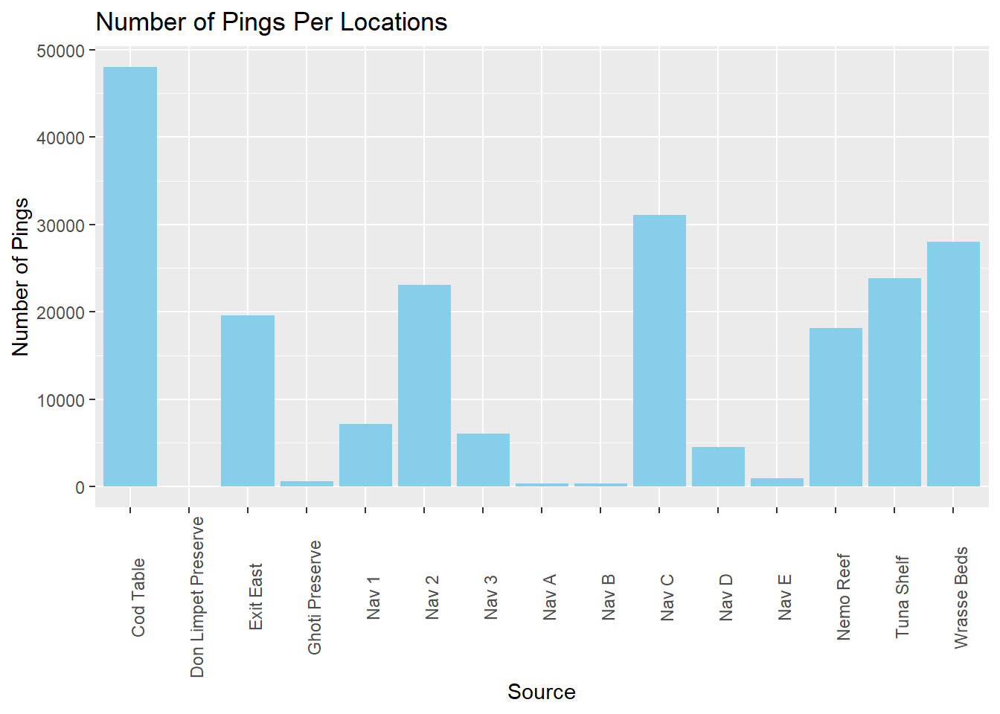
Observation: Above plot give more insights into other potential illegal fishing activitis area apart from Ghoti Preserve. Based on all fishing vessels movement, there are reasonably high transponder pings detected at Nemo Reef, Exit East and Nav 2 even though they are not commercial fishing grounds. Nemo Reef (Fish present: Wrasse, Tuna, Birdseye, Beauvoir, Helenaa) and Exit East (Deep Sea Fishing) are potential illegal fishing area since there are fish present. Presence of vessels in these areas calls for further investigation into potential fishing in unauthorized area. Nav2 is closed to Ghoti Preserve and authorities should investigate this area as well for potential unauthorized fishing.
To understand when SouthSeafood Express Corp vessels performed their illegal fishing, let’s take a look at the locations that SouthSeafood Express Corp vessels frequently visited. This can be done by plotting transponder ping data on calendar map.
# Group data by date and location to get transponder pings counts
grouped <- E_Tping_Fishing_SS %>%
count(date_only, source) %>%
ungroup() %>%
na.omit()
# Build the Calendar Heatmap
ggplot(grouped,
aes(date_only,
source,
fill = n)) +
geom_tile(color = "white",
size = 0.1) +
coord_equal() +
scale_fill_gradient(name = "# of Transponder Pings",
low = "sky blue",
high = "dark blue") +
labs(x = NULL,
y = NULL,
title = "Transponder Pings by Date and Location") +
theme(axis.ticks = element_blank(),
axis.text.y = element_text(size = rel(0.7)),
plot.title = element_text(hjust = 0.5),
legend.title = element_text(size = 8),
legend.text = element_text(size = 6),
legend.position = "none")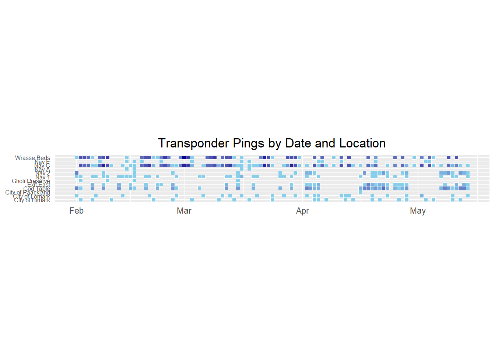
From above plot, most frequent visited locations can be observed as Wrasse Beds, Nav C, Cod Table and Exit East. It is also good to check the duration these vessels spent at each location to understand they may have indeed performed illegal fishing activities.
# Group data by date and dwell
dwell <- E_Tping_Fishing_SS %>%
group_by(date_only,source,vessel_id) %>%
summarize(total_dwell = sum(dwell, na.rm = TRUE))
# Plot the data with faceting
ggplot(dwell, aes(x = date_only, y = total_dwell, color = vessel_id)) +
geom_line() +
geom_point() +
labs(title = "Total Dwell Time by Date at Each Location",
x = "Date",
y = "Total Dwell Time",
color = "Vessel Id") +
facet_wrap(~ source) +
theme_minimal()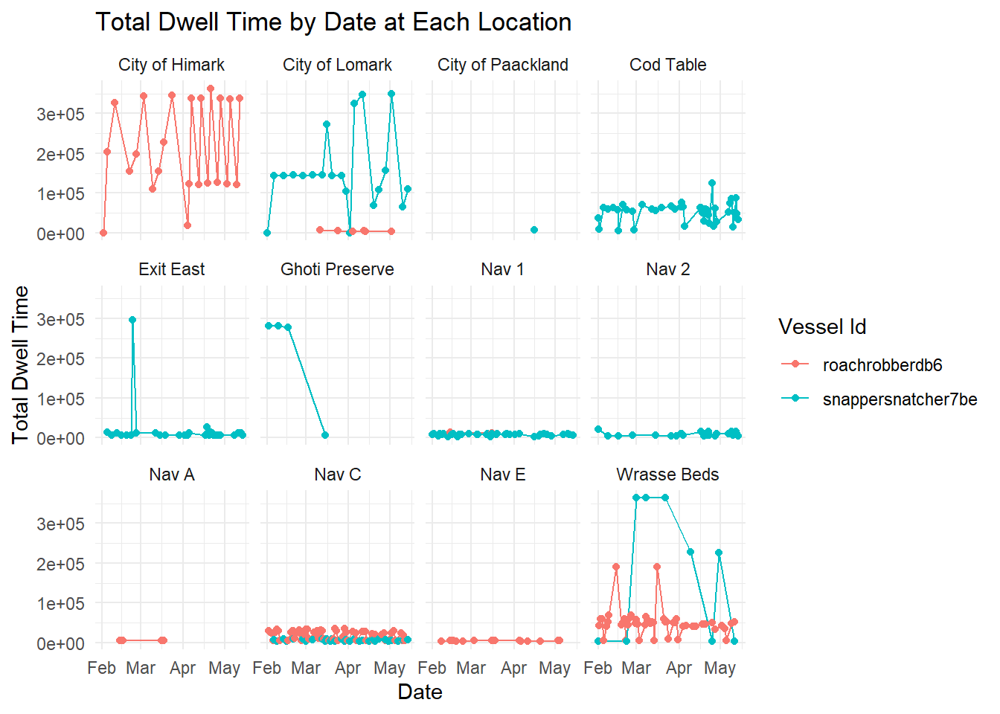
Observation: Apart from port locations (City of Himark and City of Lomark) where higher dwell times are expected, high dwell times are also observed at Wrasse Beds, Cod Table, Ghoti Preserve and Exit East (only one occurence). Long dwell time similar at Ghoti Preserve similar to that of Wrasse Beds and even higher than dwell time at Cod Table further validate the initial suspicions that SouthSeafood Express Corp vessel particularly (snappersnatcher7be) may be performing illegal fishing in the Ghoti Preserve area. High dwell time at Ghoti Preserve were observed in February time frame and it is highly likely that illegal fishing activities were performed during this time period in Ghoti Preserve.
By connecting possible cargo to vessels and their company, SouthSeafood Express Corp showed anomaly in number of fish species caught which is lower than majority of other fishing companies which suggests potential non-reporting/ misreporting the actual catch from fishing to officials or transhipment.
From total tonnes of fish delivered to ports plots by month, general increasing trend is observed in the total fish caught and delivered to port from February to November. There is significant increase in cod fish catches stating from August. This may be a sign of illegal fishing which is taking fish in excess quota or this could be attributed to starting of best time for cod fishing which is winter.
Investigating the SouthSeafood Express Corp Vessels’ fishing route based on transponder ping data, suspicious pattern is discovered which shows vessels were in the area of Ghoti Preserve which is not meant for commercial fishing. Further comparison of this to other vessels in Oceanus showed that many companies may also be engaging in illegal fishing activities since they have been in areas of Ecological Preserves such as Ghoti Preserve and Nemo Reef which are not designated for commercial fishing.
Based on all fishing vessels movement, there are reasonably high transponder pings detected at Nemo Reef, Exit East and Nav 2 even though they are not commercial fishing grounds. Nemo Reef (Fish present: Wrasse, Tuna, Birdseye, Beauvoir, Helenaa) and Exit East (Deep Sea Fishing) are potential illegal fishing area since there are fish present. Presence of vessels in these areas calls for further investigation into potential fishing in unauthorized area. Nav2 is closed to Ghoti Preserve and authorities should investigate this area as well for potential unauthorized fishing.
Transponder ping Frequency per location and total dwell time per day at different locations show that SouthSeafood Express Corp may have indeed performed illegal fishing activities at Ghoti Preserve since long dwell times were observed in this area similar or higher than dwell times spent by SouthSeafood’s vessel at commercial fishing spots like Wrasse Beds and Cod Table. High dwell time at Ghoti Preserve were observed in February time frame and it is highly likely that illegal fishing activities were performed during this time period in Ghoti Preserve.
Illegal, unreported and unregulated fishing and corruption